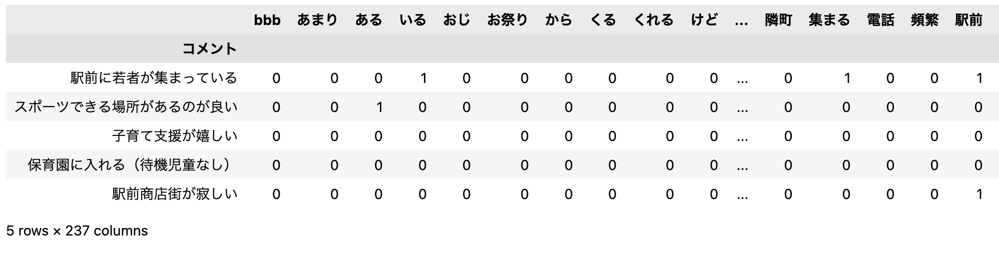
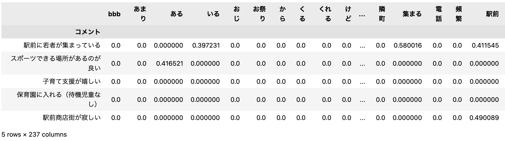

自然言語処理にむけて#
画像認識は、もともと画像データが多次元ベクトルとして、よく似た画像が近いベクトルで表現されるなど、機械学習で処理しやすい前提が整っていました。 一方、自然言語などのテキストは、文字コードが近くても意味が近いわけではありません。
自然言語を機械学習で処理するためには、テキストの特徴量を多次元ベクトルでうまく表現することが鍵になります。

AI入門のまとめとして、自然言語を機械学習で扱う方法をみていきます。
モジュールの準備
import numpy as np
import pandas as pd
import matplotlib.pyplot as plt
import seaborn as sns
try:
import japanize_matplotlib #matplotlibの日本語化
except ModuleNotFoundError:
!pip install japanize_matplotlib
import japanize_matplotlib
sns.set(font="IPAexGothic") #日本語フォント設定
!pip install -q kogi
import kogi
形態素解析#
言語における意味の基本単位は 語(word) です。 まず、語を取り出す方法からみていきましょう。
英語と日本語#
自然言語処理は、言語の種類によって難しさや扱い方が異なります。
- (英語文) I bought a book
- (日本語文) 私は本を買った
英語は、空白で区切られたものを語と考えることができます。 したがって、Python の標準文字列ライブラリだけで、簡単に語を取り出すことができます。
日本語では、まず語の区切りを判定する必要があります。 しかし、この語の区切りを判定するのがかなりの難処理となります。 そこで、専用のツール/ライブラリが必要となります。
形態素解析ツール/ライブラリ
日本語文から、語の区切りを決定するツール/ライブラリ
spaCy/GINZA#
spaCy は、Explosion AI 社の開発するオープンソースの自然言語処理ライブラリです。 2019 年に、 リクルート AI 研究所と国立言語研究所の研究成果である GiNZA が登場し、実用的な日本語処理が手軽に利用できるようになりました。
まずは、GiNZA の導入から始めましょう。pip install ginza を入力するだけで、
形態素解析も含め、自然言語処理に必要なライブラリがまとめてインストールされます。
日本語文を形態素解析したいときは、次の通り、使います。
import spacy
nlp = spacy.load('ja_ginza')
doc = nlp("私は本を買った") #形態素解析
for word in doc:
print(word.i, word.orth_, word.lemma_, word.pos_, word.tag_)
0 私 私 PRON 代名詞
1 は は ADP 助詞-係助詞
2 本 本 NOUN 名詞-普通名詞-一般
3 を を ADP 助詞-格助詞
4 買っ 買う VERB 動詞-一般
5 た た AUX 助動詞
形態素解析によって得られた各字句(word)は、次のようなプロパティ情報をもっています。 この中から必要な情報を取り出して利用します。
| プロパティ | 情報 |
|---|---|
orth_ |
入力語 |
lemma_ |
原型 |
pos_ |
品詞(Part of Speech) |
tag_ |
品詞タグ |
vector |
単語ベクトル |
日本語文を単語単位に分割する関数wakachi(s)を定義しておきましょう。
def wakachi(s):
doc = nlp(s)
return [word.lemma_ for word in doc] # word.lemma_ は標準形
print(wakachi('私は本を買った'))
(時間があったら）Let's try
自然言語処理と形態素解析の良い練習問題は、「自然言語処理１００本ノック」にあります。
http://www.cl.ecei.tohoku.ac.jp/nlp100/
Web上には、解説記事がたくさん掲載されていますので、参考にしながら解いてみると実力がつきます。
アンケート分析#
不動産屋による「まちづくりに関するアンケート」に基づいて、アンケート解析を試していきましょう。
データの入手
本データは、下山らによる「Python 実践データ分析 100 本ノック」から 講義用に編集したものを利用します。
満足度は、5段階評価で、1(不満)〜 5(満足)のようにスコア付けされています。
コメントを眺める#
今まで、様々なデータを扱ってきましたが、 今回のデータの特徴は、 自由記述形式のテキストが入っているのが特徴です。
まず、アンケート中のコメントの分量を把握してみましょう。
文字数を数えて、新しいカラム(文字数)を作って格納します。
異常に長いコメントもありますね。
単語レベルの解析#
コメントから単語を抽出して、どのような単語が使われているか調べてみましょう。
ここでは、形態素解析の品詞情報(_pos)から、動詞、形容詞、名詞だけに着目してみます。
words = []
for text in df["コメント"]:
doc = nlp(text)
for word in doc:
# 動詞(VERB), 名詞(NOUN), 形容詞(ADJ)のみ抽出
if word.pos_ == 'VERB' or word.pos_ == 'NOUN' or word.pos_ == 'ADJ':
words.append(word.lemma_) #標準形に変換する
print(len(words))
print(words[:30]) #先頭30語だけ
375
['駅前', '若者', '集まる', 'スポーツ', '場所', 'ある', '良い', '子育て', '支援', '嬉しい',
'保育園', '入れる', '待機児童', 'なし', '駅前', '商店街', '寂しい', '生活', '便利',
'遊ぶ', '場所', 'ない', '遊ぶ', '場所', 'ない', '商業', '施設', '出来る', '欲しい',
'病院']
これで、コメント文の中で用いられている名詞、動詞、形容詞をすべて取り出すことができました。
単語を抽出するコツ
- 標準形変換: 活用のある単語（例. 「買った」）は、買うのように標準形に変換する
- ストップワード除外: 解析の精度を上げるために不要な記号や単語を取り除く
単語の頻出度と視覚化#
単語の抽出ができたら、最初のステップとして、単語の出現頻出度から調べていきます。
ここは、新しいデータフレームを作り、value_counts()で調べてみましょう。
まず、日本語フォントをインストールしておきます。（これがないと文字化けします。）
## !pip install wordcloud
from wordcloud import WordCloud
fpath = '/usr/share/fonts/truetype/fonts-japanese-gothic.ttf'
#fpath = 'fonts-japanese-gothic.ttf'
word_chain = ' '.join(words)
model = WordCloud(width=800, height=600, background_color='white', colormap='bone', font_path=fpath)
W = model.generate(' '.join(words))
plt.imshow(W)
plt.axis('off')
plt.show()
アンケートの満足度に影響を与えているキーワードが見えてきました。 しかし、まだどのキーワードがプラスの評価なのか、マイナスの評価なのかわかりません。
満足度の高いキーワード#
今回のデータの素晴らしい点は、不動産の満足度が 5 段階評価で回答されている点です。 各キーワードとこの5段階評価を紐付けてみると、キーワードの満足度が見えて来るかもしれません。
コメント内の単語と満足度をペアにして取り出してみます。
words = []
scores = []
for text, score in zip(df["コメント"], df["満足度"]):
doc = nlp(text)
for word in doc:
if word.pos_ in ['VERB', 'NOUN', 'ADJ']:
words.append(word.lemma_)
scores.append(score)
print(words[:30])
print(scores[:30])
Pandas を使って表データにまとめておきましょう。
出現数1回のカラムを作って、groupbyしてみましょう。満足度は平均値(np.mean)をとって、集計します。
keyword = pd.DataFrame({"キーワード": words, "満足度": scores, "出現数": [1]*len(words)})
keyword.groupby('キーワード').agg({'満足度': np.mean, '出現数': sum}).sort_values(by='出現数')
Let's try
満足度の高いキーワードと満足度の低いキーワードのトップ 5を出してみよう
今回の分析は、出現頻度のあまりに低い単語を除外した方が良いです。 このように、データサイエンティスト(分析者)のセンスで、結果は少し変わります。
極性辞書とセンティメント解析
極性辞書は、ある単語が一般的にネガティブなのか、 ポジティブなのかを、-1（ネガティブ）から1（ポジティブ）までのスコアの形で表現したものです。
テキストのベクトル化⭐️#
次は、いよいよテキストのベクトル化を考えていきます。
ポイントは、意味や内容が似ているテキストや単語が近くなるようにベクトル化することです。 もともと、類似文章検索 として研究されてきました技術になります。
まず、準備として、わかち書きされたカラムを作っておきましょう。
BOW#
BOW(Bag of Words) は最も古典的な文書の特徴量を捉えてベクトル化する手法です。 出現する単語の個数をN とすると、各コメント文は出現した単語にはそれぞれ1が入ったN次元のベクトルで表現されます。
BOW のポイントは、文章の構造は全て無視し、「どの単語が含まれているか」だけに注目している点です。 そして、一旦、コメント文をベクトルで表現できれば、 コサイン類似度 (cosine similarity) を用いて、類似度を求めることができます。
BOW の原理は、難しくありません。
sklearnモジュールのCountVectorizerを使って、楽に BOW を求めることができます。
ただし、sklearn は、英語圏で開発されたライブラリなので、
入力文は英単語のように空白で区切られているという前提になっています。
日本語は、先程の「わかち書き」のように前処理しておく必要があります。
from sklearn.feature_extraction.text import CountVectorizer
docs = np.array(df['わかち書き'])
model = CountVectorizer()
bags = model.fit_transform(docs)
print(bags.toarray())
[[0 0 0 ... 0 0 0]
[0 0 1 ... 0 0 0]
[0 0 0 ... 0 0 0]
...
[0 0 0 ... 0 0 0]
[0 0 0 ... 0 0 0]
[0 0 0 ... 0 0 0]]
データフレームにして、コメントがどのようにベクトル化されたかみてみましょう。

BOWは、単語の並びを無視しています。 語順を無視すると重要な情報が飛んでしまいそうですが、 不思議なことに類似文書検索では、十分精度がでます。
コサイン類似度#
コサイン類似度は、文書ベクトルの類似度を測る尺度としてよく使われます。 ベクトルの向きがどの程度同じ方向を向いているか？という指標で、−1〜1の範囲をとります。
コサイン類似度を数式で記述すると以下のようになります。
なんかそろそろNumPyも読みやすくなってきませんか？
def cosine_similarity(x, y):
return np.dot(x, y)/(np.sqrt(np.dot(x, x))*np.sqrt(np.dot(y, y)))
X = np.array([0.7, 0.5, 0.3,0.1])
Y = np.array([0.8, 0.5, 0.2, 0.222])
print(cosine_similarity(X, Y))
もちろん、skleranモジュールにもコサイン類似度のライブラリは含まれています。 こちらは、ユニバーサル関数バージョンになっているので気をつけましょう。
from sklearn.metrics.pairwise import cosine_similarity
X = np.array([[0.7,0.5,0.3,0.1], [0.1,0.2,0.9,0.9]])
Y = np.array([[0.8, 0.5, 0.2, 0.2], [0.1,0.2,0.9,0.9]])
print(cosine_similarity(X, Y))
実際に、「スポーツできる場所があるのが良い(index=1)」を例にして、 類似しているコメントを探してみましょう。
def print_sim(index):
vec = bags.toarray()
similarity = cosine_similarity(vec[index:index+1], vec)[0]
top10 = np.argsort(similarity)[::-1][:10]
for i in top10:
print(similarity[i], df['コメント'][i])
print_sim(1)
1.0 スポーツできる場所があるのが良い
0.39999999999999997 ランニングとか運動できる場所が多い
0.3162277660168379 サイクリングコースが良い
0.25819888974716115 都内へのアクセスが良い
0.25819888974716115 遊ぶ場所がない
0.22360679774997896 市長が若くて活気がある
0.22360679774997896 消防団が活発で安心できる
0.19999999999999998 子どもが安全に遊ぶ場所がない
0.19999999999999998 歩道が広い道が多くて安心できる
0.19999999999999998 近くに公園があって住みやすい
TF/IDF ⭐️#
BOW は、単語の出現を見るだけで、重要度を考慮に入れていません。
TF-IDF(Term Frequency-Inverse Document Freequency: 単語頻度-逆文書頻度) は、 よくある一般的な単語と特徴のある重要な単語の区別をつける指標です。
単語 w が n 回現われるとき、TF(Term Frequence)
単語 w を含む文が d 個あるとき、IDF(Inverse Document Frequency)
TF-IDF は、 と の積によって求まる。
IDF は一種の一般語フィルタとして働き、多くの文書に出現する語(一般的な語)は重要度が下が り、特定の文書にしか出現しない単語の重要度を上げる役割を果たします。
TF/IDF を用いることで、重要度の重みつけされたベクトルが得られます。（本当は、自分で計算してみましょうとしたいのですが、）sklearn のライブラリを用いてお手軽に計算してみます。
from sklearn.feature_extraction.text import TfidfVectorizer # tf-idf
vectorizer = TfidfVectorizer(max_df=0.9) #文書全体の90%以上で出現する単語は無視する
X = vectorizer.fit_transform(df['わかち書き'])
print('feature_names:', vectorizer.get_feature_names())
print('X:')
print(X.toarray())

Let's Try
TF/IDFの場合も、BOWと同様に、類似コメントを探してみよう。
LSA⭐️⭐️#
LSA（潜在的意味解析）では、 トピックという文書と単語の間に存在する抽象的な概念を導入し、各文書の BOW あるいは TF-IDF ベクトルを行とする文書数×単語数の行列を特異値分解（SVD)し、文書数×トピック数に次元削減します。
８次元に減らしてみます
from sklearn.decomposition import TruncatedSVD
np.set_printoptions(suppress=True)
# SVD
svd = TruncatedSVD(n_components=8, n_iter=7, random_state=0)
svd.fit(X.toarray())
X = svd.transform(X.toarray())
では、「スポーツできる場所があるのが良い(index=1)」と類似しているコメントをみてみましょう。
def print_sim(index):
similarity = cosine_similarity(X[index:index+1], X)[0]
top10 = np.argsort(similarity)[::-1][:10]
for i in top10:
print(similarity[i], df['コメント'][i])
print_sim(1)
0.9999999999999998 スポーツできる場所があるのが良い
0.9704742874252414 ランニングとか運動できる場所が多い
0.9271749843766424 市長が若くて活気がある
0.8850136813887487 消防団が活発で安心できる
0.8794676152538797 歩道が広い道が多くて安心できる
0.8696169842692176 サイクリングコースが良い
0.8678878385469999 冬場、路面凍結で事故が多い、対応できませんか
0.8541713596444912 有名な企業が多い
0.836653242687093 隣町にできたごみ処理施設が心配、公害は大丈夫？
0.8337364715521739 都内へのアクセスが良い
練習問題#
今回のアンケートでは、自由形式のコメントと満足度を同時に回答するようになっていたため、 満足度の高いキーワードを抽出できました。 また、コメント文をベクトル化することで、コメント間の類似度が求められることも見えてきました。
疑問（文書からの満足度）
満足度は予測できるのでしょうか?
これは、エントリーシートから(採用後の)満足度は予想できるのでしょうか?と同じ質問になります。 皆さんは AI がエントリーシートを判定しているという噂を聞いたことがありますね。
演習（エントリシート）
企業がどのように AI を活用して、エントリーシートを分析しているか考察してみよう。 （可能であれば、今回のコメント文から満足度を予測するモデルを構築してみよう。）
今まで学んできた知識を総動員して、もし足りなかったら追加で調査して考えてみましょう。
（おまけ）単語分散表現⭐️⭐️#
文書中の単語出現数を元に文書ベクトルを紹介してきましたが、 最後に単語の持つ意味的な情報を用いる手法として、 単語分散表現（単語ベクトル）について紹介します。
単語分散表現では、単語を多次元空間上の座標にマッピングすることで、 単語同士の類似度を比較したり、加減算したりすることができるようになります。
単語分散表現は、さまざまな方法で求められます。 しかし、2013年にGoogle研究所が発表したWord2Vecが有名です。 これは、「同じ文脈で登場する単語は似た意味を持つ」という分布仮説をベースにして、 ニューラルネットワークで計算されます。
単語ベクトル#
GiNZAは、形態素解析したときに単語ベクトルがvoctorプロパティで付与されています。
単語ベクトルを確認してみる
doc = nlp('スポーツ 良い')
print(doc[0].vector.shape, doc[0].vector) # 「スポーツ」の単語ベクトル
#print(doc[1].vector.shape, doc[1].vector) # 「良い」の単語ベクトル
(300,) [ 0.13375778 -0.17257443 0.02516939 0.1324365 -0.05213964 0.36968458
-0.40936273 0.11759301 -0.01370322 0.16887937 0.25840095 -0.03895048
-0.12300318 -0.16547137 0.14446233 -0.04904341 -0.38537306 0.2110346
-0.22277047 -0.06400058 -0.21376547 0.0176675 -0.00410596 -0.01469426
-0.02343989 -0.11121087 0.23225866 0.03399521 0.0003097 -0.17104886
-0.05210022 0.04949599 0.24797468 0.25802103 -0.12333041 0.31917045
...(中略)...
-0.26684946 0.06684791 -0.17897451 -0.06707234 -0.10908245 0.13751653
-0.38477394 -0.21492186 -0.08163136 -0.12800853 0.42276528 -0.02782323
-0.03355124 0.0600879 -0.08807893 0.10318359 0.11266886 -0.12545823]
文章ベクトル#
文章ベクトルは、単語ベクトルから算出されます。
この算出方法は色々ありますが、 GiNZAでは、各単語の平均値ベクトルとして算出されるようです。
(300,) [-0.02920693 -0.05320758 -0.0522105 -0.08731095 -0.03517435 -0.02590578
0.00206362 -0.1063849 -0.09927486 -0.04500962 0.04499383 -0.06481141
-0.0288375 0.04145418 -0.11855906 -0.13537505 -0.07372829 -0.005988
-0.1166847 0.00200363 -0.07982864 0.0653679 -0.02242133 0.03441318
-0.09967872 -0.10132443 -0.17745972 -0.00701735 -0.01890183 -0.02232861
0.00425247 -0.09943429 0.1189977 0.11469252 -0.01476635 -0.00565097
-0.08678276 0.08944558 -0.06026531 0.01860928 0.07967254 0.03719408
-0.0694015 -0.03305633 -0.04918492 -0.06143166 -0.00042069 0.01650344
...(中略)...
0.06049172 -0.02185039 -0.0914305 -0.09839067 0.0950931 -0.02670297
0.00542849 0.00232094 -0.06282385 0.02534583 0.01359846 -0.03921163
0.01357794 0.10529844 -0.10408807 -0.03580856 -0.03502506 -0.02003236]
このような文書ベクトルを使うことでも文書類似度検索を行うことができます。
Let’s try
GiNZA の文書ベクトルを用いて、コサイン類似度から類似度検索をしてみよう。 TF/IDF と比較してみると面白いかも..
現在の自然言語処理では、TransformerによるBERTと呼ばれる文脈を含んだベクトル化が発明されて、 人工知能や機械翻訳の精度が大きく向上しています。 さらに詳しく勉強したい人は、研究室で一緒に研究しましょう。